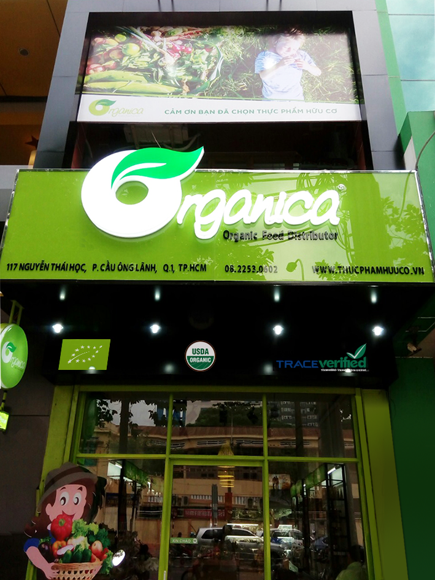
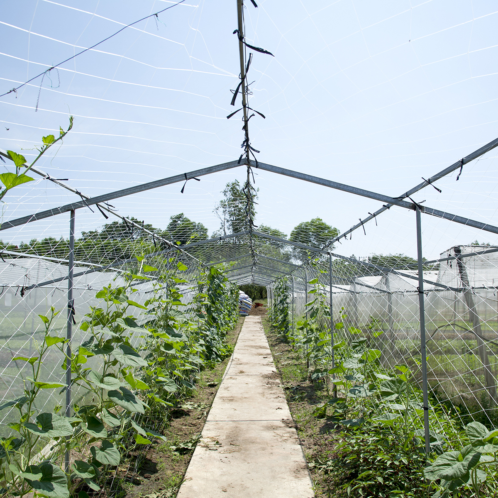
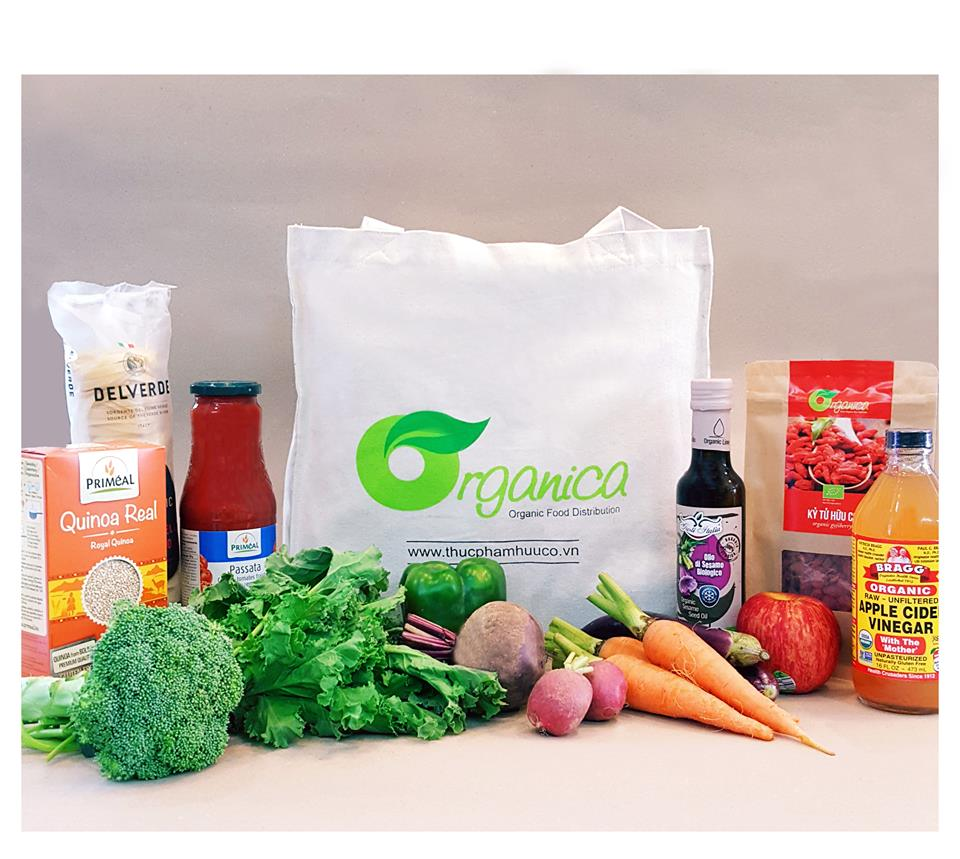
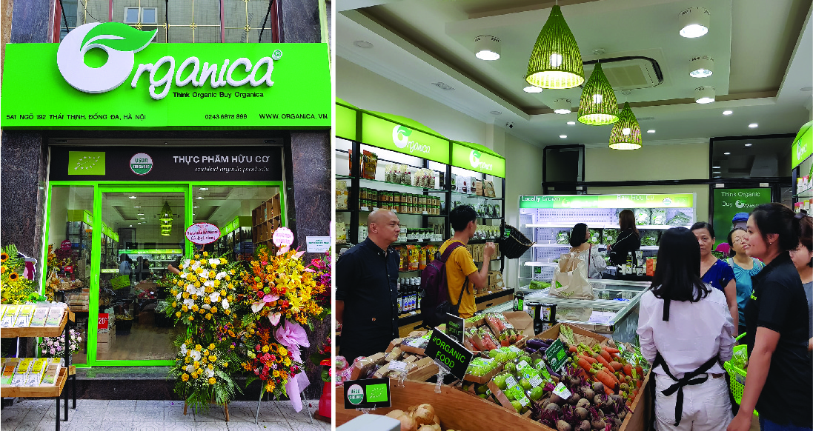

Organica, founded in early 2013, is an organic food development and distribution system operated with a mission: helping Vietnamese consumers reach a better life by qualified organic, natural or no genetically modified (GMO) food which are certified officially.

By 2015, after many self-development and manufacturing efforts, pp Organica & nbsp; in Long Thanh, Dong Nai has been certified organic by the US (USDA) and European Union (EU), became the first organic tropical vegetable farm in Vietnam Later, in 2017, Ba Vi Organica Garden was also held by the Union Control Union Prices reach the organic standards of the US and Europe. Organica also uses Traceverified, Retrieve service Vietnam's only electronic source, with the desire for transparency of information and commitment too Cultivate your organic farming with the consumer.

We believe that everyone has the rights to use clean, safe and healthy food. But it seems to be impossible under the conditions of our traditional agriculture. Started as a small business, we have been trying really hard to serve and provide our customers the best safe, clean and affordable products. Besides, we are on our way to achieve the bigger goal by cooperate with our local suppliers to produce the best goods for Vietnamese.
Besides the products developed at the farm, Organica also Coordinate with other units with organic certification to distribute the products to the consumers use Vietnam and import organic products for distribution in the country. To date, Organica has been around 1,000 kinds of organic certified products including fresh foods, dried foods, organic spices, organic cosmetics, home care products to fish care products Organic cotton is made from cotton. At present Organica is working with the counter In the United States and the EU to bring the missing organic products in Vietnam to complete the category Organic products meet the requirements of customers.

As committed since its inception, the Organica stores have spent 80% display area and product categories for sale of certified organic foods and abroad. The remaining 20% is for products that are in the transition to farming organic, environmentally friendly products (such as MSC - Capture Fisheries lasting; or UTZ-certified sustainable development for cocoa, coffee and tea), and a small portion Among them are local specialty products. All of these products have a certificate of protection food safety and traceability.

Enters its fifth year of activity in the field of development and distribution Organics & nbsp; Organica & nbsp; currently has 03 stores in HCMC. 1 store at Da Nang and 01 store in Hanoi was opened on 25/07/2018. Page system Farm & nbsp; Organica & nbsp; and associated farms have grown steadily in many localities Long Thanh (Dong Nai); Ba Vi (Hanoi); Luoyang, Don Duong (Lam Dong), Binh Phuoc, ... Organica has also put into use e-commerce website at address MYORGANICA.VN with many convenient features for shoppers on the web.